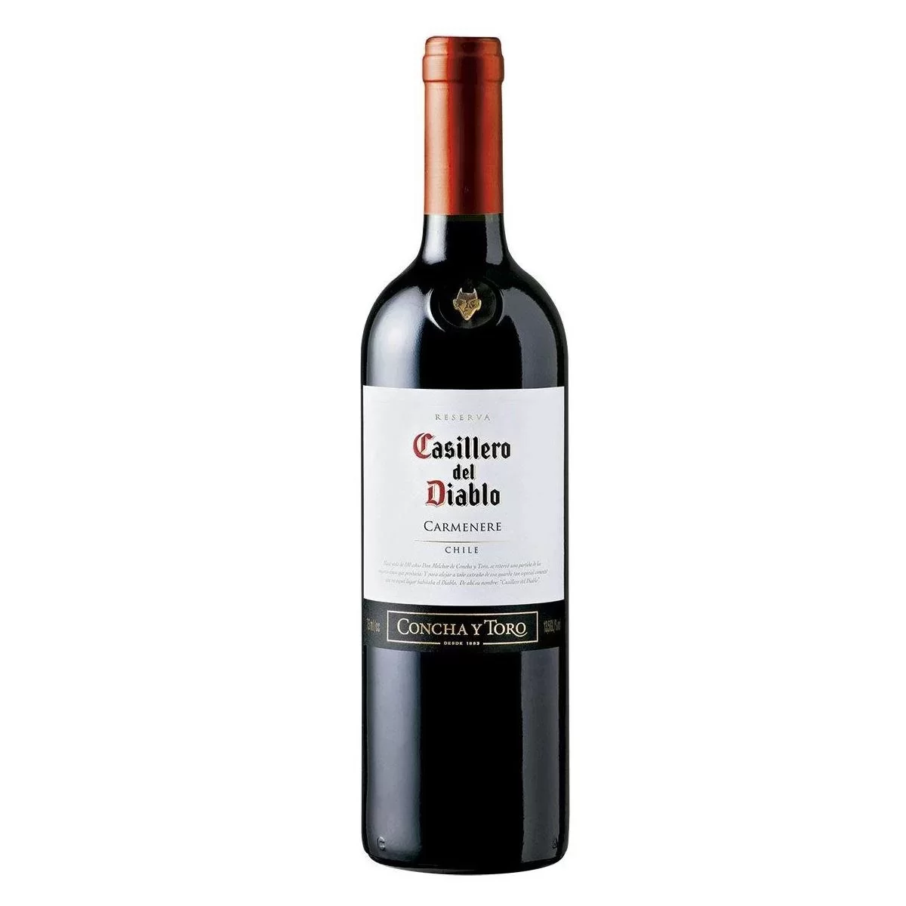

vinho é uma bebida alcoólica
O vinho foi trazido ao Brasil poucas décadas após o descobrimento do nosso país, porém poucos colonizadores teriam em mente que esta bebida tão característica do continente europeu poderia fazer tanto sucesso num país tropical.
Juntamente da forte colonização italiana que se intensificou no final do século XIX, o principal responsável por trazer esta bebida para cá foi a igreja católica, cujo diversos cardeais indicavam o uso desta bebida à população.
Porém, há diversas peculiaridades sobre esta nobre história que você precisa saber.
Nisso, a Fazenda Capoava preparou um artigo para explicar um pouco melhor como, de fato, o vinho foi trazido, onde tiveram as primeiras plantações e como ele moldou a cultura, a economia e a religião de diversas regiões do nosso país..
